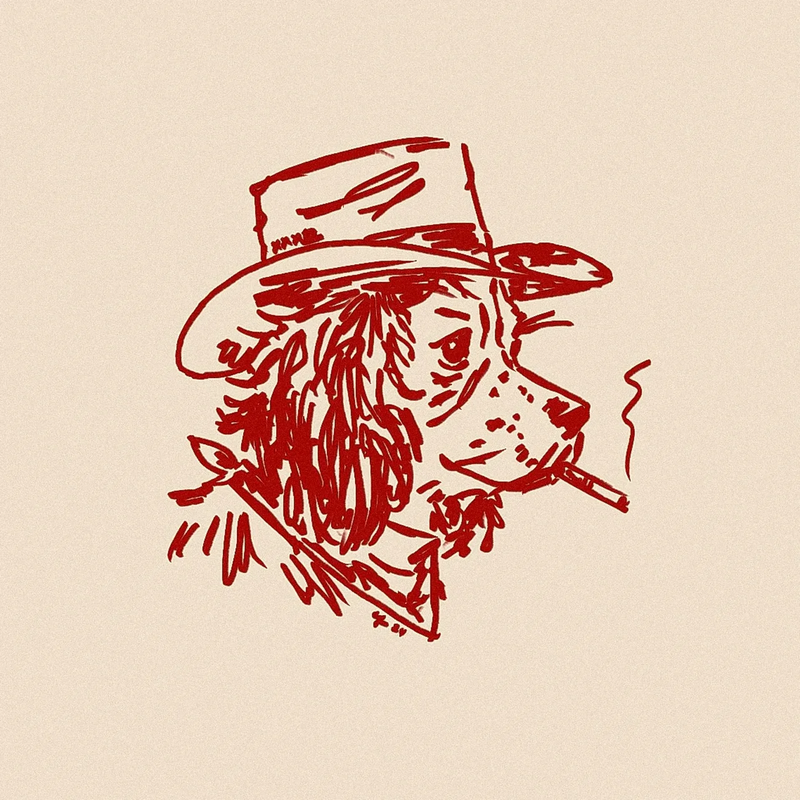

Hatmaker1200 Villa Place, Nashville, TennesseeCommissions by waitlist
Joseph Martin
Western hats and dress fedoras, made by hand from start to finish in a shop on Villa Place.
- Ready-to-wearFrom the shelf
- Made to orderNamed designs
- CustomFrom $595
Photograph to come · frontispieceJoseph at the bench on Villa Place. Window light from the left, eye level, waist up. A hat in his hands, not on his head. Looking at the camera.
JM·P·001Joseph Martin, Villa PlaceTo photograph
The hats
Four made-to-order designs, each in its own felt. The felt is the colour of the page.
JM·H·003Study drawing, not the exact shape of the hatPhotograph to replace it, same annotations
The maker
The hands, the shop and the story, in Joseph’s own words once they are recorded.
Every hat on this site was made by hand, start to finish, in the Nashville shop.
A sentence from Joseph about why he makes hats, chosen with him after the interview.Gap · No words are put in Joseph’s mouth
Photograph to come · at workWide. Joseph at the bench mid-task, not looking up. Hands and face both readable. Steam if it is there.
JM·P·002At the benchTo photograph
- 01Conversation
In person in Nashville, or remotely: what you wear, where you go, what the hat is for.
- 02Fit
Head size and shape, taken in the shop or guided at home with the sizing notes.
Process to confirm
- 03Making
Felt, shape, band and details, made start to finish on Villa Place.
Process to confirm
- 04Handover
Collected at the shop or sent to you.
Process to confirm
Around the work
Posters, drawings and a driving club: the things that grow up around a hat shop. Supporting, never in front of the hats.

JM·D·001PosterReal work

JM·D·002DrawingReal work
Music City Driving Club.
A cream jacket and its patchesEnter →JM·C·001Printed on its own stockNo members, dates or partners announced
Hats, felts, charms, drawings and open questions, kept as the work happens.
The archiveHave one made
Commissions are currently taken from a waitlist.
Any colour, any shape, any detail. Made once, for one head.
- Custom fur felt
- $1,395, all-inclusive
- Custom straw
- $595–$1,150
- Time
- About 4–6 weeks*
- Where
- Villa Place, or remotely